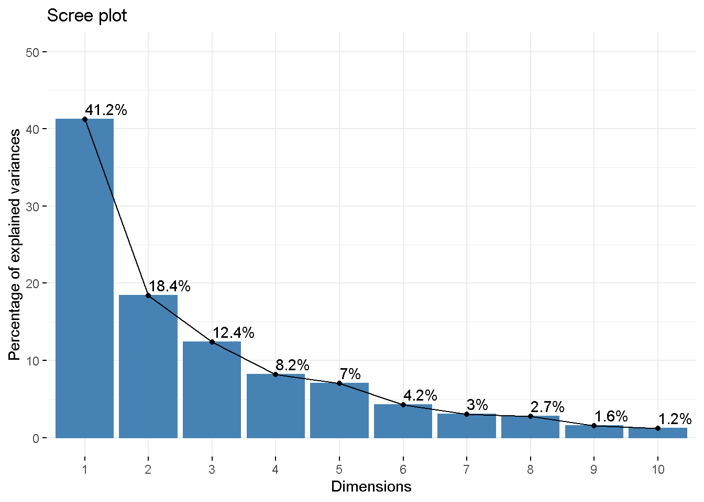

Capítulo 4 Análise de Clusters
Felipe Micail da Silva Smolski
A ideia central da Análise de Cluster é a possibilidade de efetuar a classificação dos objetos em grupos, de forma que os objetos dentro do mesmo grupo sejam mais similares quanto possível e, de forma análoga, que os diversos grupos (clusters) sejam mais diferentes o possível em sua constituição (Kassambara 2017a). Embora possa parecer semelhante ao conteúdo do capítulo anterior, as diferenças residem no fato de que a Análise Fatorial agrega variáveis e efetua os agrupamentos em base de padrões de variação (correlação) dos dados enquanto a Análise de Cluster (agrupamentos) objetiva agregar objetos (e não variáveis), fazendo a agregação baseada na distância (proximidade) (Hair et al. 2009).
A medida de distância utilizada de maneira mais comum utililizada é a Distância Euclidiana como mostra a Figura abaixo (embora existam outras métricas como a Distância de Manhattan, a Distância de Correlação de Pearson, a Distância de Correlação de Eisen, a Distância de Correlação de Spearman e a Distância de Correlação de Kendal).
Figura 4.1: Cálculo da distância entre A e B no espaço X Y
Fonte: Pereira (2004).
Em outro sentido, existem vários métodos de clusterização, dentre eles: a) Clusterização Particionada, que faz parte as técnicas K-Means, K-Medoids e CLARA; b) Clusterização Hierárquica, de que faz parte a Clusterização Aglomerativa (Kassambara 2017a). Neste capítulo serão apresentadas as técnicas denominadas K-Means e a Clusterização Aglomerativa.
4.1 K-Means
O método de clusterização K-means classifica os objetos dentro de múltiplos grupos, de forma que a variação intra-cluster seja minimizada pela soma dos quadrados das distâncias Euclidianas entre os itens e seus centroides.
\[ W(C_k)=\sum _{x_i\in C_k}(x_i-\mu _k)^2 \] Desta forma \(x_i\) é o ponto que pertente ao cluster \(C_k\) e \(\mu _k\) representa a média do valor atribuído ao cluster \(C_k\). Cada observação (\(x_i\)) é designada a um cluster de forma que a soma dos quadrados da distância da observação em relação ao seu cluster central (\(\mu _k\)) é mínima. Ainda, para definir a variação intra-cluster é utilizadaa fórmula abaixo, sendo que deve ser tão baixa quanto o possível (Kassambara 2017a):
\[ tot.intracluster=\sum_{k=1}^{k} W(C_k)=\sum_{k=1}^{k}\sum _{x_i\in C_k}(x_i-\mu _k)^2 \] Como veremos adiante, deve-se selecionar o número de clusters desejado para que sejam criadas as classificações que precisar ou, executar o comando que definirá o número ótimos de clusters para a amostra carregada. O processo de seleção das variáveis, por padrão passa por (Kassambara 2017a): (a) determinação do número de clusters; (b) selecionar randomicamente objetos para determinar os valores centrais; (c) assinar as observações pela distância Euclidiana em relação aos seus centróides; (d) efetuar atualizações calculando a nova média dos valores dentro de seu cluster definido; (e) minimizar a soma dos quadrados intra-cluster (o R utiliza 10 repetições dos passos d-e).
Vamos carregar a tradicional base de dados nativa do RStudio mtcars, que traz informações sobre 32 modelos de automóveis, sendo as respectivas variáveis que os descrevem:
- mpg: milhas por galão;
- cyl: número de cilindros;
- disp: número que representa o volume total no motor como um fator de circunferência do cilindro, profundidade e número total de cilindros;
- hp: potência;
- drat: relação do eixo traseiro;
- wt: peso (1.000 lbs);
- qsec: tempo de 1/4 de milha;
- vs: motor (0 = em forma de V; 1 = linha reta);
- am: transmissão (0 = automático; 1 = manual);
- gear: número de marchas na transmissão (3-4 automático; 4-5 manual);
- carb: número de carburadores;
Segue abaixo o carregamento da base de dados, sendo que neste exemplo foi utilizada a função scale() para balancear as informações (para mais informações utilize a ajuda do RStudio ?scale).
mpg cyl disp hp drat wt qsec vs am
Mazda RX4 0.1509 -0.105 -0.5706 -0.5351 0.5675 -0.6104 -0.7772 -0.868 1.19
Mazda RX4 Wag 0.1509 -0.105 -0.5706 -0.5351 0.5675 -0.3498 -0.4638 -0.868 1.19
Datsun 710 0.4495 -1.225 -0.9902 -0.7830 0.4740 -0.9170 0.4260 1.116 1.19
gear carb
Mazda RX4 0.4236 0.7352
Mazda RX4 Wag 0.4236 0.7352
Datsun 710 0.4236 -1.1222A função kmeans() é utilizada para o cálculo, sendo que x representa a base de dados a ser analisada; centers será substituído pelo número de clusters desejados; iter.max representa o número de iterações para a constituição dos objetos dentro dos clusters, sendo que o padrão é 10; nstart é o número inicial de partições, sendo que o recomendado é superior a 1.
kmeans(x, centers, iter.max=10, nstart=1)
Para determinar automaticamente o número ótimo de clusters da classificação, antes de rodar a função kmeans(), é possível utilizar a função fviz_nbclust() do pacote factoextra. Desta forma, utilizando a noção da soma dos quadrados intra cluster é possível verificar que o número ótimo de clusters para a amostra é 4. Isto porque novos clusters acima de 4 possuem baixo ganho para aumentar a diferenciação dos demais.
# Número ótimo de clusters
library(factoextra)
fviz_nbclust(df, kmeans, method = "wss")+
geom_vline(xintercept = 4, linetype = 2)
Em seguida utilizamos o número determinado de clusters (neste caso 4) com o comando kmeans. Como resultado temos a média dos centros por clusters e a classificação de cada modelo de veículo da amostra dentro do respectivo cluster. Observa-se que o cluste 1 tem 12 modelos de veículos, o cluster 2 tem 8 modelos, o cluster 3 possui 7 modelos e no cluster 4 foram enquadrados 5 modelos.
K-means clustering with 4 clusters of sizes 12, 8, 7, 5
Cluster means:
mpg cyl disp hp drat wt qsec vs am
1 -0.8363 1.0149 1.02385 0.6925 -0.88975 0.90636 -0.3952 -0.868 -0.8141
2 1.3248 -1.2249 -1.10627 -0.9453 1.09821 -1.20087 0.3365 0.868 1.1899
3 0.1082 -0.5849 -0.44867 -0.6497 -0.04968 -0.02347 1.1855 1.116 -0.8141
4 -0.2639 0.3430 -0.05908 0.7601 0.44782 -0.22101 -1.2495 -0.868 1.1899
gear carb
1 -0.9318 0.1677
2 0.7624 -0.8126
3 -0.1573 -0.4146
4 1.2368 1.4781
Clustering vector:
Mazda RX4 Mazda RX4 Wag Datsun 710 Hornet 4 Drive
4 4 2 3
Hornet Sportabout Valiant Duster 360 Merc 240D
1 3 1 3
Merc 230 Merc 280 Merc 280C Merc 450SE
3 3 3 1
Merc 450SL Merc 450SLC Cadillac Fleetwood Lincoln Continental
1 1 1 1
Chrysler Imperial Fiat 128 Honda Civic Toyota Corolla
1 2 2 2
Toyota Corona Dodge Challenger AMC Javelin Camaro Z28
3 1 1 1
Pontiac Firebird Fiat X1-9 Porsche 914-2 Lotus Europa
1 2 2 2
Ford Pantera L Ferrari Dino Maserati Bora Volvo 142E
4 4 4 2
Within cluster sum of squares by cluster:
[1] 23.08 19.04 21.29 23.40
(between_SS / total_SS = 74.5 %)
Available components:
[1] "cluster" "centers" "totss" "withinss" "tot.withinss"
[6] "betweenss" "size" "iter" "ifault" Após determinado o número de clusters ideal e calculado para qual cluster cada variável do banco de dados pertence, é possível verificar as características de cada aglomeração. Com o cálculo da média utilizando a função aggregate, observa-se que os veículos com milhas por galão (mpg) médias mais baixos encontram-se no cluster 1, juntamente com aqueles com maior quantidade de cilindros (cyl) como é de se imaginar, com alta potência em cavalos (hp), concentranto-se automóveis automáticos (am=0). Já no cluster 2, por exemplo, estão aqueles veículos com maior similaridade e com uma maior autonomia (média de 28,07 mpg), baixa potência em cavalos (hp), veículos com câmbio manual (am) e baixos cilindros (cyl). Ainda os clusters 3 e 4 completam os grupos de veículos similares entre si.
cluster mpg cyl disp hp drat wt qsec vs am gear carb
1 1 15.05 8.000 357.62 194.17 3.121 4.104 17.14 0.000 0 3.000 3.083
2 2 28.07 4.000 93.61 81.88 4.184 2.042 18.45 0.875 1 4.250 1.500
3 3 20.74 5.143 175.11 102.14 3.570 3.194 19.97 1.000 0 3.571 2.143
4 4 18.50 6.800 223.40 198.80 3.836 3.001 15.62 0.000 1 4.600 5.200Abaixo são incluídas as informações dos clusters calculados anteriormente para cada modelo de automóvel, bem como as distâncias dos centros calculados:
mpg cyl disp hp drat wt qsec vs am gear carb cluster
Mazda RX4 21.0 6 160 110 3.90 2.620 16.46 0 1 4 4 4
Mazda RX4 Wag 21.0 6 160 110 3.90 2.875 17.02 0 1 4 4 4
Datsun 710 22.8 4 108 93 3.85 2.320 18.61 1 1 4 1 2
Hornet 4 Drive 21.4 6 258 110 3.08 3.215 19.44 1 0 3 1 3
Hornet Sportabout 18.7 8 360 175 3.15 3.440 17.02 0 0 3 2 1
Valiant 18.1 6 225 105 2.76 3.460 20.22 1 0 3 1 3 mpg cyl disp hp drat wt qsec vs am
1 -0.8363 1.0149 1.02385 0.6925 -0.88975 0.90636 -0.3952 -0.868 -0.8141
2 1.3248 -1.2249 -1.10627 -0.9453 1.09821 -1.20087 0.3365 0.868 1.1899
3 0.1082 -0.5849 -0.44867 -0.6497 -0.04968 -0.02347 1.1855 1.116 -0.8141
4 -0.2639 0.3430 -0.05908 0.7601 0.44782 -0.22101 -1.2495 -0.868 1.1899
gear carb
1 -0.9318 0.1677
2 0.7624 -0.8126
3 -0.1573 -0.4146
4 1.2368 1.4781É importante ainda verificar a similaridade dos clusters de veículos calculados neste exemplo de forma visual. Para isto uma sugestão elencada por Kassambara (2017a) é a função fviz_cluster do pacote factoextra. Esta função utiliza os dados originais e os clusters encontrados para plotar os resultados em um gráfico utilizando a técnica de componentes princiapais, como segue na imagem abaixo. Desta forma fica nítido a proximidade entre os modelos de veículos em seus clusters:
# Vizualizando os clusters
library(ggplot2)
library(factoextra)
fviz_cluster(km.res, data=mtcars2,
palette = c("#2E9FDF", "#00AFBB", "#E7B800", "#FC4E07"),
ellipse.type="euclid",
star.plot=TRUE,
repel=TRUE,
ggtheme=theme_minimal()
)Efetuando predições com o modelo de cluster
Sepal.Length Sepal.Width Petal.Length Petal.Width Species
1 5.1 3.5 1.4 0.2 setosa
2 4.9 3.0 1.4 0.2 setosa
3 4.7 3.2 1.3 0.2 setosa
4 4.6 3.1 1.5 0.2 setosa
5 5.0 3.6 1.4 0.2 setosa
6 5.4 3.9 1.7 0.4 setosa
setosa versicolor virginica
50 50 50 library("gridExtra")
library(ggplot2)
a=ggplot(data = iris) +
aes(x = Petal.Width, y = Petal.Length, color = Species) +
geom_point() +
theme_minimal()
b=ggplot(data = iris) +
aes(x = Sepal.Width, y = Sepal.Length, color = Species) +
geom_point() +
theme_minimal()
grid.arrange(a, b, ncol=2) [1] 1 2 1 2 2 1 1 2 1 1 2 1 1 1 1 2 1 1 1 2 2 1 1 2 1 2 1 1 1 1 2 2 1 2 1 1 2
[38] 1 1 1 1 1 1 1 1 1 1 1 1 2 1 1 2 1 1 1 1 2 2 1 1 1 1 1 2 1 2 2 2 1 2 1 2 1
[75] 1 1 1 1 1 1 1 1 1 2 1 1 2 2 2 1 1 1 1 1 1 1 2 1 1 1 1 1 1 2 1 2 2 1 1 1 2
[112] 1 1 2 2 1 1 2 1 1 1 1 1 1 1 2 1 1 1 1 1 2 1 2 1 1 2 2 2 1 1 1 1 1 2 1 1 1
[149] 1 2K-means clustering with 3 clusters of sizes 35, 29, 42
Cluster means:
Sepal.Length Sepal.Width Petal.Length Petal.Width
1 4.940 3.406 1.446 0.2429
2 6.821 3.007 5.683 2.0690
3 5.883 2.733 4.317 1.3905
Clustering vector:
1 3 6 7 9 10 12 13 14 15 17 18 19 22 23 25 27 28 29 30
1 1 1 1 1 1 1 1 1 1 1 1 1 1 1 1 1 1 1 1
33 35 36 38 39 40 41 42 43 44 45 46 47 48 49 51 52 54 55 56
1 1 1 1 1 1 1 1 1 1 1 1 1 1 1 2 3 3 3 3
57 60 61 62 63 64 66 70 72 74 75 76 77 78 79 80 81 82 83 85
3 3 3 3 3 3 3 3 3 3 3 3 3 2 3 3 3 3 3 3
86 90 91 92 93 94 95 96 98 99 100 101 102 103 105 108 109 110 112 113
3 3 3 3 3 3 3 3 3 3 3 2 3 2 2 2 2 2 2 2
116 117 119 120 121 122 123 124 125 127 128 129 130 131 133 135 136 140 141 142
2 2 2 3 2 3 2 3 2 3 3 2 2 2 2 2 2 2 2 2
143 144 146 147 148 149
3 2 2 3 2 2
Within cluster sum of squares by cluster:
[1] 10.56 16.21 25.01
(between_SS / total_SS = 89.2 %)
Available components:
[1] "cluster" "centers" "totss" "withinss" "tot.withinss"
[6] "betweenss" "size" "iter" "ifault" Sepal.Length Sepal.Width Petal.Length Petal.Width Species cluster
1 5.1 3.5 1.4 0.2 setosa 1
3 4.7 3.2 1.3 0.2 setosa 1
6 5.4 3.9 1.7 0.4 setosa 1
7 4.6 3.4 1.4 0.3 setosa 1
9 4.4 2.9 1.4 0.2 setosa 1
10 4.9 3.1 1.5 0.1 setosa 1
1 2 3
setosa 35 0 0
versicolor 0 2 34
virginica 0 27 8[1] 0.4245taxaerro = (confusao[2]+
confusao[3]+
confusao[4]+
confusao[6]+
confusao[7]+
confusao[8]) / sum(confusao)
taxaerro[1] 0.5755Carregando pacotes exigidos: gridCarregando pacotes exigidos: latticeCarregando pacotes exigidos: modeltoolsCarregando pacotes exigidos: stats4kcca object of family 'kmeans'
call:
kcca(x = iristreino[, 1:4], k = 3, family = kccaFamily("kmeans"))
cluster sizes:
1 2 3
35 31 40 2 4 5 8 11 16
1 1 1 1 1 1 Sepal.Length Sepal.Width Petal.Length Petal.Width Species cluster
1 5.1 3.5 1.4 0.2 setosa 1
3 4.7 3.2 1.3 0.2 setosa 1
6 5.4 3.9 1.7 0.4 setosa 1
7 4.6 3.4 1.4 0.3 setosa 1
9 4.4 2.9 1.4 0.2 setosa 1
10 4.9 3.1 1.5 0.1 setosa 1
1 2 3
setosa 15 0 0
versicolor 0 1 13
virginica 0 11 4[1] 0.4545taxaerro = (confusao[2]+
confusao[3]+
confusao[4]+
confusao[6]+
confusao[7]+
confusao[8]) / sum(confusao)
taxaerro[1] 0.54554.2 Clusterização Aglomerativa
Uma das principais técnicas de Clusterização Hierárquica é a Clusterização Aglomerativa. Como premissa básica para a formação de clusters nesta técnica é realizada: a) a inclusão inicial de casa objeto considerando um agrupamento individual; b) próximo passo são formados pares de clusters com maiores similaridades entre si; c) repete-se o procedimento em novos clusters maiores, chegando até um único grande cluster (Kassambara 2017a).
Pimeiramente é demonstrado o carregamento da base de dados mtcars (utilizada no subcapítulo anterior), efetuando o balanceamento dos dados com a função scale() (segundo Kassambara (2017a) a padronização das variáveis ajuda a deixá-las comparáveis, pois estão originalmente em escalas diferentes):
mpg cyl disp hp drat wt qsec vs am
Mazda RX4 0.1509 -0.105 -0.5706 -0.5351 0.5675 -0.6104 -0.7772 -0.868 1.19
Mazda RX4 Wag 0.1509 -0.105 -0.5706 -0.5351 0.5675 -0.3498 -0.4638 -0.868 1.19
Datsun 710 0.4495 -1.225 -0.9902 -0.7830 0.4740 -0.9170 0.4260 1.116 1.19
gear carb
Mazda RX4 0.4236 0.7352
Mazda RX4 Wag 0.4236 0.7352
Datsun 710 0.4236 -1.1222Agora é utilizada a função dist() para criar a distância entre os pares de dados que serão objeto de análise para a formação dos primeiros pares de dados similares. No exemplo abaixo foi utilizada a Distância Euclidiana como method.
Depois de calculada a distância entre os objetos é possível verificar os índices encontrados (matriz de dissimilaridade), sendo que no exemplo abaixo extraímos somente as três primeiras linhas e as três primeiras colunas para fins de visualização:
Mazda RX4 Mazda RX4 Wag Datsun 710
Mazda RX4 0.0000 0.4076 3.243
Mazda RX4 Wag 0.4076 0.0000 3.176
Datsun 710 3.2431 3.1764 0.000O próximo passo é efetuar a criação dos clusters com base na similaridade, por meio de iterações que agrupem as variáveis em clusters cada vez maiores até formar uma árvore hierárquica. A função hclust() utiliza os dados das distâncias encontradas anteriormente (objeto “dista”) e o método (method). O método a ser utilizado pode ser: ward.D, ward.D2, single, complete, average, mcquitty, median ou centroid, sendo que os métodos denominados ward e complete são mais utilizados, pois o primeiro minimiza a variância intra-cluster e o segundo define a distância entre dois clusters como o valor máximo de todos os pareamentos enrte os elementos do cluster 1 e os elementos do cluster 2 (extraído de Kassambara (2017a), que traz maiores explicações sobre a diferença entre os métodos).
A representação gráfica da Aglomeração Hierárquica é efetuada através da imagem de um dendograma, que pode ser facilmente criada com a fórmula plot(dista.hc). Aqui foi utilizado o pacote factoextra e sua função fviz_dend para a criação do dendograma:

Referências
Hair, Joseph F., William C. Black, Barry J. Babin, e Ronald L. Tatham. 2009. Análise Multivariada de Dados. 6a ed. São Paulo: Bookman.
Kassambara, Alboukadel. 2017a. Practical Guide To Cluster Analysis in R. 1 ed. USA: STHDA.
Pereira, Júlio Cesar Rodrigues. 2004. Análise de Dados Qualitativos: Estratégias Metodológicas para as Ciências da Saúde, Humanas e Sociais. 3 ed. São Paulo: Editora da Universidade de São Paulo.